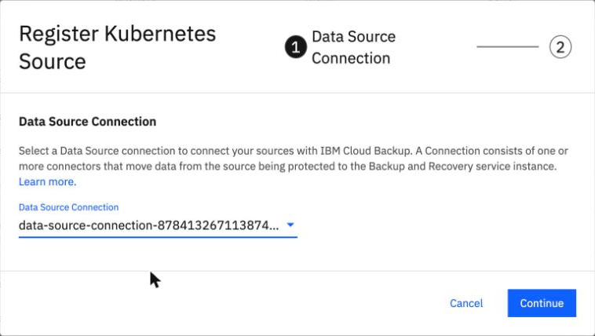
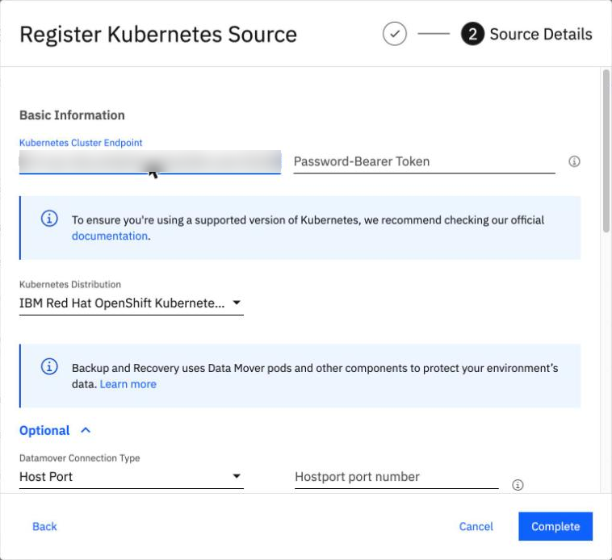
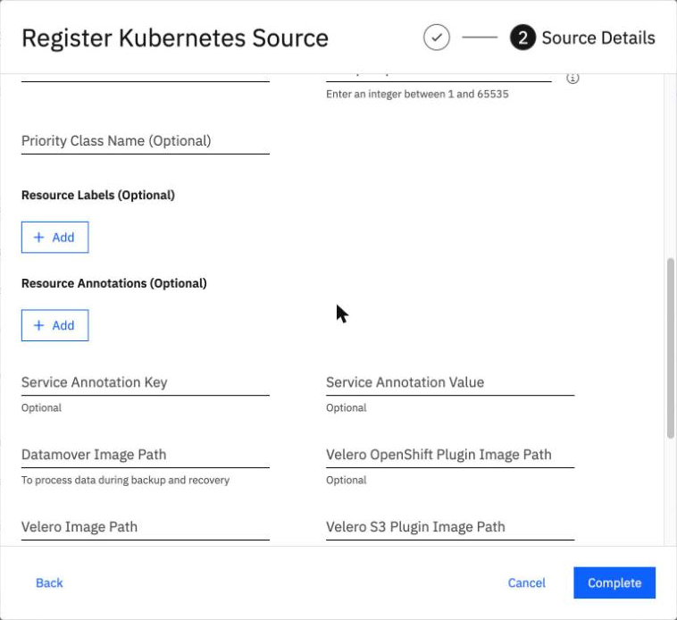
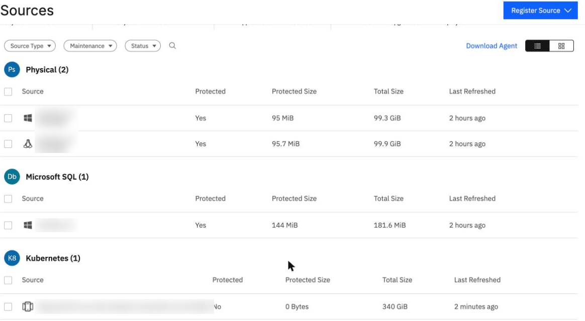

Register the cluster as a source
By the end you can say what registering a ROVS cluster needs, click through the registration, and tell what each failure message our lab met was pointing at.
Northgate Freight is a made-up company. Its ROVS cluster, ng-cluster-01, now has a connector. The next job is to register the cluster as a source.
OpenShift Virtualization VM backup was not generally available when we tested it (5 October 2026). IBM lists it for the AU-SYD region only: its pages, updated 26 June 2026, call it "intended for testing and proof-of-concept scenarios in the AU-SYD region", and they still said so when we read them on 9 November 2026. Names, endpoints and IDs in messages were changed. Every screen and result comes from our lab on 1 and 2 October and 9 November 2026.
What registration needs
Registering the cluster as a source needs four things. Three go in the form; the fourth is the connection from unit 5.1.
Which token goes in the Password-Bearer Token field?
Show the answer
The field takes the service account token. Do not use the Helm registration token: on 1 October 2026 it was tried and BRS answered Unauthorized access. Please check the credentials.[kUnauthorized]. In our lab on 9 November 2026 the service account brs-sa, a cluster-admin role binding and the secret brs-sa-token were made on the cluster, and the token was copied from the secret without showing it.
Which Kubernetes Distribution do you pick for a ROVS cluster?
Show the answer
The form offers those two. The lab chose IBM Red Hat OpenShift Kubernetes Service. In the command line the same choice is kROKS, and a wrong value gave: "Only IKS and ROKS kubernetes distributions are supported in IBM environment".
Register the source
These screens come from the BRS console in our lab on 9 November 2026, with the connection from unit 5.1. Click where you would click. After two misses the right place is marked.

The form asks for a Data Source Connection. Where do you pick it?
Show where
Right. Pick the connection whose name ends in -RoksVpc and click Continue. Do not use Create Data Source Connection on this page: it gives the VMware flow (unit 5.1).

Source Details asks for the cluster endpoint and a token. Click the field for the service account token.
Show where
Right. Password-Bearer Token. The endpoint field above it holds the API server URL, blurred here. Below it, Kubernetes Distribution is IBM Red Hat OpenShift Kubernetes Service.

Optional settings are listed under the form. Where would you set a priority class?
Show where
Right. Priority Class Name (Optional). Optional also holds the Datamover connection type (Host Port), labels, annotations and image paths. The lab kept every default.

You clicked Complete and the source appeared. Where is its size?
Show where
Right. Total Size, 340 GiB. On 9 November 2026 at 07:30 UTC the console said "Registered Kubernetes Source successfully" at the first try, and none of the errors in the next step came back.
Read the message
On 1 October 2026, and in later tests, our lab met these messages while registering. Each question gives a message. Pick the cause. Values in the messages were changed.
The command line answers: KInternalError, "Encountered HTTP connection error". What does it tell you?
Show the answer
That is the rule. On 1 October 2026 the connection used had no connectors, and the same error came back every time. After that, check the network.
The answer is: Unauthorized access. Please check the credentials.[kUnauthorized]. What went wrong?
Show the answer
The field needs a valid cluster token: use the secret brs-sa-token, not the registration token.
The answer is: Error: https://ng-api.example.com:31228 already registered to cohesity-1234567. What do you do?
Show the answer
In our lab the cluster endpoint was registered to a self-managed Cohesity cluster. A cluster can have only one Cohesity registration.
Every command answers: Authentication failed: Neither session cookie nor token is present in the request. The token is fine. What else?
Show the answer
In our lab, without the trailing / on the tenant ID, every command gave KStatusUnauthorized; with it, the same command worked. Once the service URL pointed at another instance and gave the same error. These two came from the command line, not the console.
Eight attempts, then a success
Here are the eight attempts of 1 October 2026 that did not register the cluster. On 2 October the registration worked.
What was run (1 Oct 2026, instance in au-syd) Result CLI register, no connection ID KInternalError: Encountered HTTP connection error CLI register, connection with no connectors same error CLI register, VPE endpoint as the cluster endpoint failed (command not recorded) curl POST to the registrations path same error eu-de instance, registration token as the cluster token Unauthorized access. ... [kUnauthorized] eu-de instance, brs-sa-token, one API port already registered to cohesity-<number> eu-de instance, brs-sa-token, another API port no answer in 120 s: Cloudflare error code: 524 au-syd, BRS private URL given as the cluster endpoint KTimedoutError: Encountered HTTP timeout error
What did our lab establish as the reason it worked on 2 October?
Show the answer
What changed between the two days is not established. An earlier version said the instance must be in the same region; that was wrong, because the au-syd instance registered the eu-de cluster on 2 October 2026. On 9 November 2026 an eu-de instance and an eu-de cluster worked too. IBM's pages still say the VM feature is for testing in au-syd.
Which attempt failed because the cluster endpoint was not the cluster API server?
Show the answer
The last one. That value is the BRS URL, not the cluster API server, so it was a wrong input. The Cloudflare 524 means BRS waited 120 seconds for the cluster and got no answer.
Three questions
How many Cohesity registrations can one cluster have?
Show the answer
A cluster can have only one Cohesity registration. A second one gives the "already registered" message.
Review from unit 5.1. The Helm command says deployed, and a minute later the connector pod is Pending. What is the likely cause on a ROVS cluster?
Show the answer
In our lab the claim was Pending for that reason; setting the cluster's own storage class fixed it.
Registration says Encountered HTTP connection error. What do you check first?
Show the answer
Then check network access. It is the first thing to try.
You can register a cluster
Use the service account token, not the Helm registration token. A cluster can have only one Cohesity registration. Three of our lab's eight failed attempts on 1 October 2026 gave one error, Encountered HTTP connection error, and the first thing to check is that the connection has connectors. The cause of the change to success on 2 October is not established.